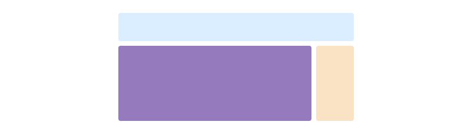
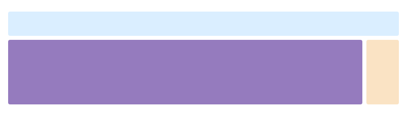
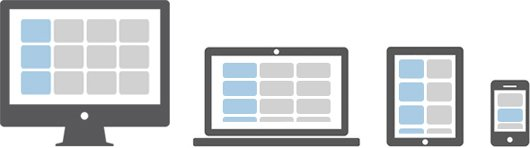
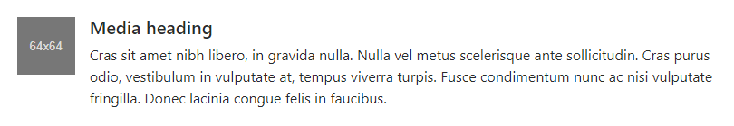

Razlaga vsebnikov, vrstic, stolpcev in uporabnih razredov za odzivno razporeditev vsebine.
Postavitev v Bootstrapu temelji na kombinaciji vsebnikov, vrstic in stolpcev. Ta hierarhija pomaga, da ostane razporeditev vsebine predvidljiva in odzivna.
Ko razumeš osnovni vzorec container → row → col, lahko sestaviš večino običajnih strani.
Razred .container omeji širino vsebine in jo poravna na sredino. Razred .container-fluid pa omogoči, da vsebina uporabi celotno širino zaslona. Izbira je odvisna od tega, ali želiš bolj zračen in omejen videz ali popolnoma raztegnjene odseke.


Mreža ima dvanajst stolpcev. Z razredi, kot so col-md-6, col-lg-4 ali col-12, določiš, koliko prostora zavzame posamezen element pri različnih širinah zaslona.

Bootstrap uporablja odzivne prelomne točke. To pomeni, da lahko element na telefonu zavzame celotno širino, na tablici polovico, na večjem zaslonu pa tretjino vrstice. S tem ohraniš berljivost in nadzor nad vizualnim ritmom strani.
...
...
...
Starejši projekti pogosto uporabljajo objekt .media. V sodobnih različicah ga običajno nadomestimo s kombinacijo Flex utilities in Grid utilities, ki ponujajo več nadzora nad razporeditvijo slike in besedila.

Cras sit amet nibh libero, in gravida nulla. Nulla vel metus scelerisque ante sollicitudin.
Bootstrap vsebuje razrede za odmike, robove, širino, višino, poravnavo, prikaz in odzivnost. Namesto pisanja novega CSS-ja lahko veliko tipičnih prilagoditev narediš neposredno z utility razredi.
Pri posebnih primerih lahko določiš, kaj se ob tiskanju skrije ali ostane vidno. Čeprav to ni več najpogostejši scenarij, je v nekaterih poslovnih aplikacijah še vedno pomembno, da so računi, potrdila ali poročila urejeno pripravljena tudi za tisk.